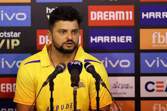
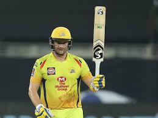
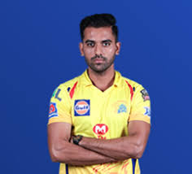

M.S.Dhoni

Suresh Raina

Shane Watson

Deepak Chahar
The Chennai Super Kings (CSK) are a franchise cricket team based in Chennai, Tamil Nadu, which plays in the Indian Premier League (IPL). Founded in 2008, the team plays its home matches at the M. A. Chidambaram Stadium in Chennai. The team served a two-year suspension from the IPL starting July 2015 for the alleged involvement of their owners in the 2013 IPL betting case,[2] and won the title in its comeback season. The team is captained by Mahendra Singh Dhoni and coached by Stephen Fleming.
The Super Kings have lifted the IPL title thrice (in 2010, 2011 and 2018), and has the highest win percentage among all teams in the IPL (61.28).[3] They hold the records of most appearances in the playoffs (ten) and the Final (eight) of the IPL. They are the only IPL team to qualify for the playoff stage in each edition of their appearance in the league. In addition, they have also won the Champions League Twenty20 in 2010 and 2014. The brand value of the Super Kings in 2019 is estimated to be around ₹732 crore (roughly $104 million), making them the second-most valuable IPL franchise, after Mumbai Indians.[4]
In September 2007, the Board of Control for Cricket in India (BCCI) announced the establishment of the Indian Premier League, a Twenty20 competition to be started in 2008. In January 2008, the BCCI unveiled the owners of eight city-based franchises. The Chennai franchise was sold to the India Cements for $91 million, making it the fourth most expensive team in the league behind Mumbai, Bangalore and Hyderabad. India Cements acquired the rights to the franchise for 10 years. Former ICC Chairman N. Srinivasan was the de facto owner of the Chennai Super Kings, by means of his position as the vice-chairman and managing director of India Cements Ltd. The franchisee was transferred to a separate entity named Chennai Super Kings Cricket Ltd., after the Supreme Court of India struck down the controversial amendment to the BCCI constitution's clause 6.2.4 that allowed board officials to have a commercial interest in the IPL and the Champions League T20 on 22 January 2015.